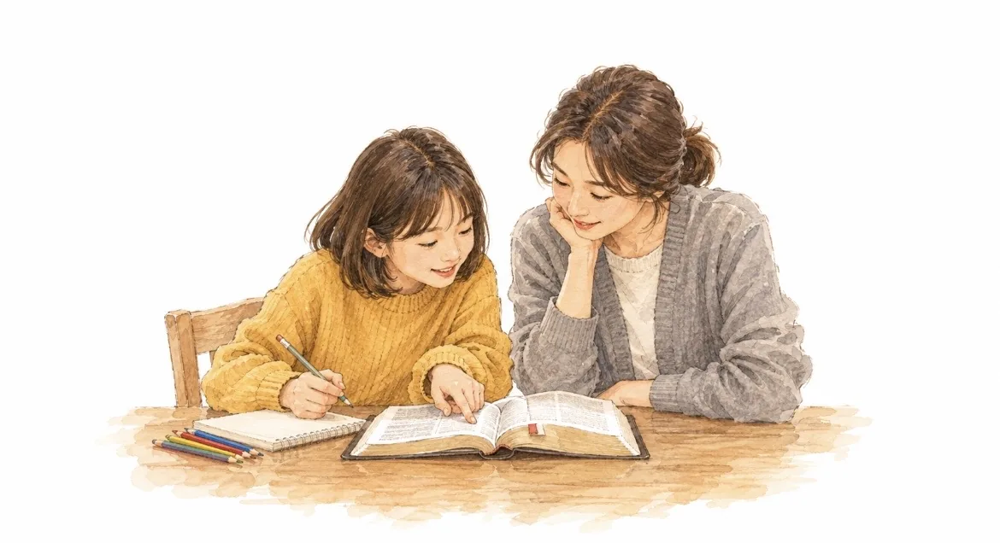
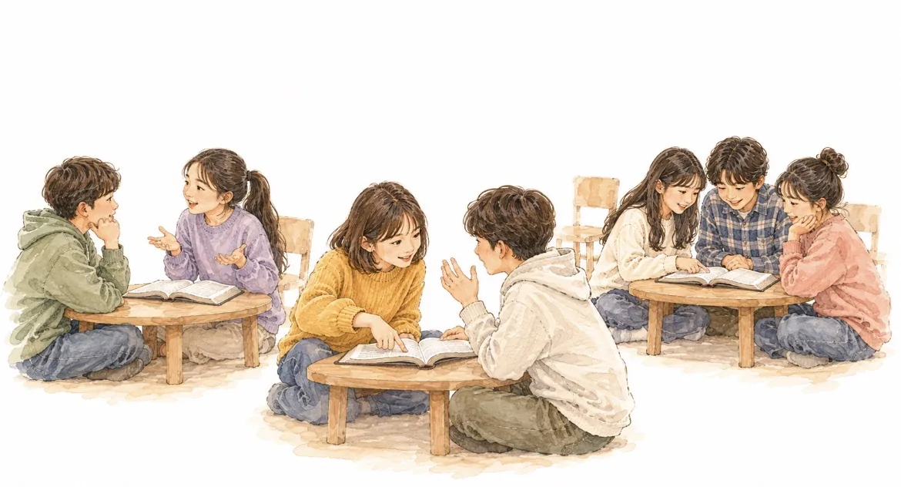
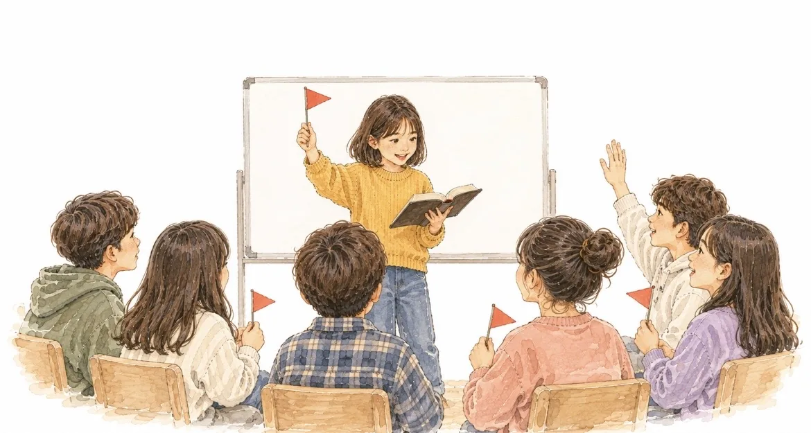
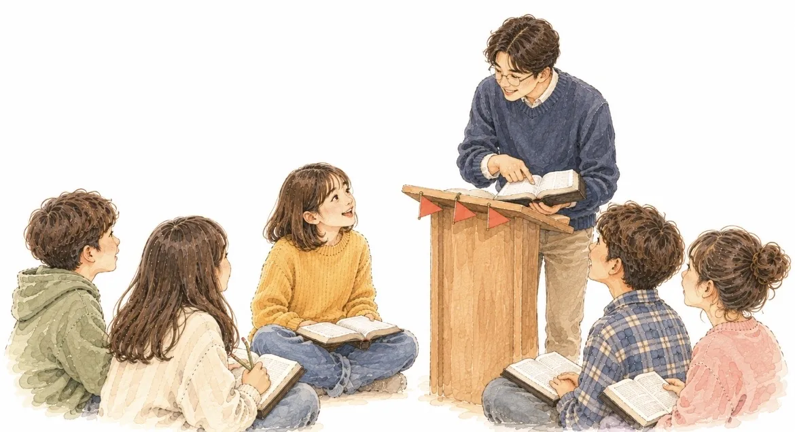
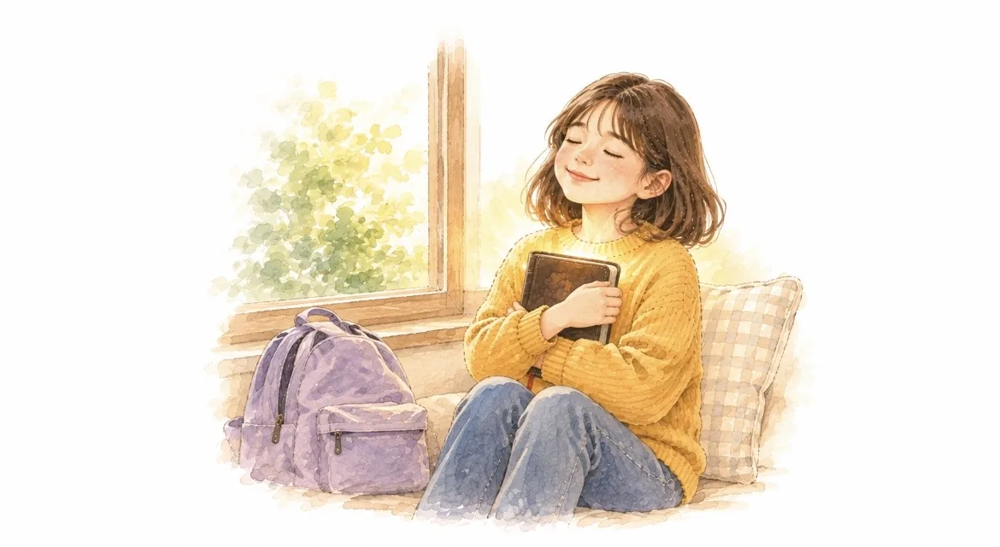

교역자님께
무엇을 해야
아이들이 변할까요?
설교를 준비하고, 공과를 챙기고, 수련회를 꾸리는 모든 수고 밑에는 이 질문이 있습니다. 토블은 이 질문에서 시작했습니다.
가장 답답한 순간
설교를 해도
아무 반응이 없습니다
차라리 "동의하지 않아요"라고 말해 주면 좋겠습니다.불만이라도 좋습니다. 가장 답답한 것은 무반응입니다.
왜 그럴까요
아이들은 엿새를 세상에서 살고,
하루 교회에 와서 듣습니다
엿새의 무게를 한두 시간이 이기기는 어렵습니다. 그런데 그 한두 시간마저
- 남의 이야기로 들립니다
수천 년 전 먼 나라 사람들의 이야기가 내 학교, 내 친구 문제와 이어진다고 느끼지 못합니다.
- 떠먹여 준 결론이라 남지 않습니다
정리된 교훈을 받아 듣기만 합니다. 스스로 씹어 보지 않은 말씀은 깊이 남지 않습니다.
- 내 고민을 가져갈 자리가 없습니다
친구, 부모, 진로, 외로움. 아이들의 고민은 교회 문 앞에서 멈추고, 말씀 앞에 놓여 본 적이 없습니다.
말씀이 내 삶과 동떨어져 있으니 관심이 없고, 관심이 없으니 질문이 생기지 않습니다. 무반응은 그 결과입니다.
변화는 어디서 시작될까요
아이가 스스로
"어떻게 해야 할까" 묻기 시작할 때
교역자가 아무리 좋은 답을 주어도, 그 답이 아이의 답이 되지는 않습니다. 결국 아이가 하나님 앞에서 스스로 풀어야 합니다.
- 말씀이 마음에 남아 있고
스스로 읽고 씹어 본 말씀이라 깊이 남습니다.
- 고민할 때 떠오르고
친구와 다툰 화요일, 그 말씀이 생각납니다.
- 말씀에서 답을 얻는 경험이 쌓이면
"말씀에 가면 길이 있구나"를 몸으로 압니다.
- 스스로 말씀 앞으로 갑니다
다음 고민 때는 누가 시키지 않아도 성경을 폅니다.
매일 말씀을 묵상하고, 말씀대로 살려고 애쓰는 삶. 교회학교가 가장 가르치고 싶은 것이지만, 주일 한두 시간의 설교만으로는 몸에 배게 하기 어렵습니다. 그 삶은 엿새 동안 일어나야 하기 때문입니다.
토블이 제안하는 길
엿새를 말씀과 함께스스로, 그러나 혼자는 아니게
주중: 아이가 직접 말씀을 연구합니다
한 주에 한 본문. 날마다 이야기를 읽고, 이야기가 멈춘 자리에서 자기 성경을 폅니다. 책은 답을 주지 않습니다.
- 관찰읽어요
본문을 소리 내어 읽고, 누가 누구에게 하는 말인지 묻습니다.
- 관찰살펴요
낱말 하나하나를 짚고, 되풀이되는 말을 찾습니다.
- 해석뜻을 찾아요
앞뒤 흐름 속에서 의미를 찾고, 궁금한 곳은 깃발로 남깁니다.
- 적용삶에 옮겨요
붙든 한 구절과 작은 실천 하나를 정하고, 함께 기도합니다.
함께 걷는 사람: 아이를 혼자 두지 않습니다
혼자 고민 앞에 놓인 아이는 혼자 풀어야 한다고 느낍니다. 말씀 앞에 서는 것은 아이 자신이지만, 곁에는 늘 함께 읽는 사람이 있습니다.
성경을 가르칠 자신이 없어도 됩니다. 아이와 같이 처음부터 찾아가는 동행자가 됩니다.
가정 형편과 상관없이, 같은 반 친구와 교사가 같은 본문을 함께 걷습니다.
교사: 답하는 사람이 아니라 묻는 사람
성경을 많이 알지 않아도 됩니다. 아이가 스스로 근거를 찾아가도록 묻기만 하면 됩니다. 답하지 못한 질문은 깃발로 남겨 교역자에게 가져갑니다.
주일: 공과가 먼저, 설교는 그다음
본문을 처음 듣는 자리였기에 설교가 먼저였습니다. 엿새를 그 본문과 함께 지내 온 아이들이라면 순서를 바꿀 수 있습니다.
한 주 동안 찾은 것을 나눕니다. 저마다 본 것이 달라 나눔이 풍성합니다. 읽지 못하고 온 아이에게는 친구들의 나눔이 첫 탐험이 됩니다.
공과에서 남은 질문, 아이들이 꽂아 온 깃발을 교역자가 풀어 주며 말씀을 전합니다.
순서와 운영 방식은 교회 형편에 맞게 정하시면 됩니다.
아이들의 한 주와 주일
말씀이 아이 마음에 머물기까지
집에서 판 말씀을 들고 와서, 친구들과 묻고 답하고, 교역자에게 답을 듣습니다. 다섯 장면으로 보여 드릴게요.


왜 그랬을까? 3절에 근거가 있어! 내 생각은 달라 앞 절을 다시 보자
이 말은 왜 세 번이나 나올까? 우리 모둠은 이렇게 봤어 우리도 그게 궁금했어
이 본문은 이렇게 말해요 아하! 그래서 그랬구나
교역자에게 달라지는 것
무반응이던 아이들이
질문을 들고 옵니다
설교가 답이 됩니다
아이들이 한 주 내내 궁금해하던 것에 답하는 설교입니다. 자기 질문의 답이라 귀를 기울입니다.
본문은 정해져 있고, 질문은 아이들이 가져옵니다
"이번 주 설교 뭐 하지?"가 "이 질문에 어떻게 답할까?"로 바뀝니다.
교사의 짐이 가벼워집니다
교사는 다 아는 사람이 아니라 묻는 사람입니다. 모르는 것은 깃발로 남기면 됩니다.
모든 아이에게 동행자가 생깁니다
부모가 함께하는 가정은 가정이, 그렇지 않은 아이는 교회학교가 곁을 지킵니다.
아이의 고민을 꺼내는 자리는 교회 형편대로
책 안에서 함께 걷는 사람과 나눌 수도 있고, 공과에서 교사가 "이번 주 말씀이 떠오른 순간이 있었어?" 하고 물어 줄 수도 있습니다. 교역자님의 재량에 맡깁니다.
안심하고 맡기실 수 있도록
교회의 가르침 안에서 걷습니다
토블이 믿는 것
- 사도신경을 신앙의 기둥으로 고백합니다.
- 성경 66권은 하나님의 감동으로 기록된, 오류가 없는 하나님의 말씀이며 신앙과 삶의 최종 권위입니다.
- 한 분 하나님은 성부, 성자, 성령 삼위로 계십니다.
- 예수 그리스도는 참 하나님이시며 참 사람이시고, 유일한 구원자이십니다.
- 사람은 오직 은혜로, 그리스도를 믿음으로 구원받습니다.
- 교회는 그리스도의 몸이며, 모든 가정은 지역 교회 안에서 자랍니다.
토블이 지키는 약속
- 이 탐험이 향하는 곳은 예수 그리스도와 그분의 복음입니다.
- 문맥은 같은 책 안에서 살피고, 다른 구절을 끌어와 끼워 맞추지 않습니다.
- 관찰하고 뜻을 살핀 뒤에야 삶에 적용합니다.
- 출처가 분명한 주석과 연구서만 참고하고, 이단 단체의 자료는 쓰지 않습니다.
- 답하지 못한 질문은 다니는 교회와 담당 교역자에게 가져가게 합니다.
- 대상
- 초등부터 중등까지함께 걷는 사람과 함께
- 연구 방법
- 귀납적 성경연구관찰, 해석, 적용
- 분량
- 한 달에 한 권하루 10분부터
- 성경
- 자기 성경 그대로어떤 번역이든 괜찮습니다
연구 방법 참고: David R. Bauer · Robert A. Traina, Inductive Bible Study (Baker Academic, 2011); Howard G. Hendricks · William D. Hendricks, Living by the Book (Moody Publishers).
함께 만들어 갈 교회를 찾습니다
2027년 2월, 교회 시범 운영을 시작합니다
교회학교 몇 곳과 함께 실제 주일에 써 보며 다듬으려 합니다. 교사가 묻는 사람이 되도록 돕는 교사용 안내(책자 또는 영상)도 시범 운영 교회와 함께 만들어 갑니다.
- 문의해 주세요교회학교 부서와 인원을 알려 주시면 연락드립니다.
- 함께 써 봅니다주중 연구와 주일 공과, 설교를 실제로 이어 봅니다.
- 함께 다듬습니다교역자와 교사의 소감, 아이들의 반응이 다음 권을 만듭니다.
만든 사람 · 김병호 (기독교대한성결교회)
어린 시절 "성경 읽어라"는 말만 듣고 자랐고, 어른이 되어 말씀이 아버지의 음성이 되는 것을 경험했습니다. 아이들이 말씀 안의 보화를 스스로 발견하는 사람으로 자라기를 바라며 토블을 만들었습니다.